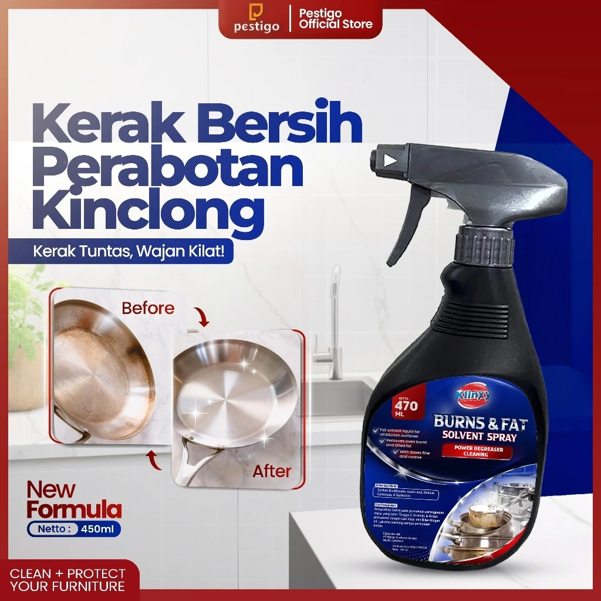

Solusi Ampuh Bersihkan Lemak, Kerak, dan Noda Membandel di Dapur.
*Stok Terbatas!

Burn and Solvent Spray adalah produk botol mengandung bahan pembersih handal, yang menghilangkan lemak, minyak, dan kotoran atau sisa sabun dengan cepat dan intensif dari semua permukaan dapur.
Sangat efisien digunakan berkat dosis halus dan kasar. Dengan seluruh kompetensi untuk perangkat pembersih, Seroxil menawarkan serangkaian bahan pembersih yang terkoordinasi sempurna.
Mampu menghilangkan kotoran dan noda membandel pada peralatan masak Anda dengan cepat.
Menghilangkan lemak, noda, karat, oksidasi, dan tanda air dengan aman tanpa merusak permukaan.
Mudah digunakan hanya dengan semprot dan usap. Solusi praktis untuk dapur bersih mengkilap.
Jangan biarkan kerak dan noda mengganggu pemandangan dapur Anda. Pesan sekarang sebelum kehabisan.
Beli Sekarang di Shopee